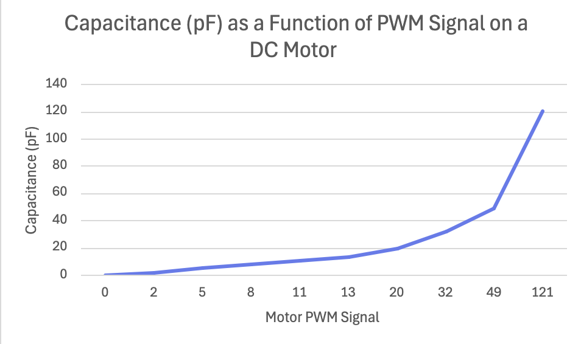
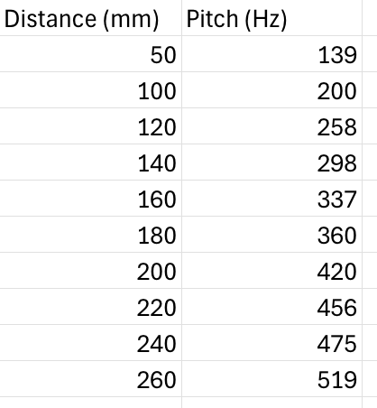
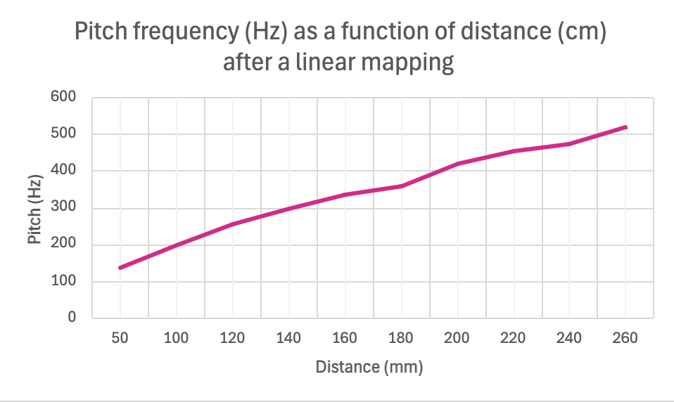
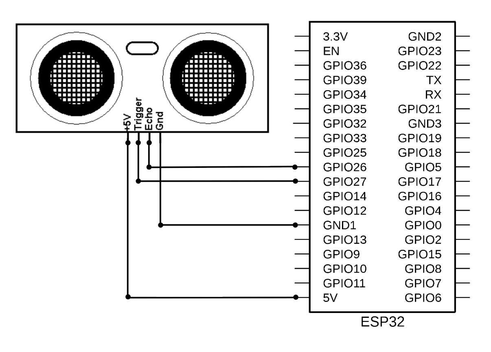

For this assignment, my team and I were tasked with making a capacitive sensor that could detect wind speed. We decided to build a capacitor with one terminal attached to a flexible piece of carboard that could be blown to angle closer or farther from a stationary terminal.
Sensor Idea
We decided to make a wind speed sensor using a piece of creased, flexible cardboard with a tin foil rectangle on either side of the crease. As wind speed picked up, the two tin foil rectangles would get blown closer together and capacitance could be measured. Of course, the calibration would not be linear because the distance traveled by the tin foil rectangles does not change linearly with the angle between the two cardboard flaps.
Data Collection
Once we established proof of concept (by blowing on it lol), I decided to shift to a more standardized approach. I used a fan that came in my arduino kit and wrote code to pulse width modulate the fan speed. I then calibrated the sensor by mapping different PWM signals to different capacitances on the sensor.

#2
Assignment 2: Build your own sensor.
Using an ultrasonic sensor and a piezo buzzer.
C++ Class Structure
I reviewed the w3schools site on C++ class structure and it was really helpful in solidifying what I learned in class about C++ class structure. I made a DistanceSensor class that takes a trig pin and an echo pin and returns a distance. I then wrote code to map this distance onto different frequencies (from 20Hz to 20kHz) that were sent to a piezo buzzer. That way, I could reach the pitch off of a web app and then calibrate the sensor to different distances. This sensor setup emulates the automatic distance alarm on some cars when they are backing up.
Arduino IDE Code
unsigned long previousMillis = 0;
const long interval = 500; // shorter interval for smoother updates
class DistanceSensor {
public:
int trigPin;
int echoPin;
float duration, distance;
DistanceSensor(int trig, int echo) {
trigPin = trig;
echoPin = echo;
}
void begin() {
pinMode(trigPin, OUTPUT);
pinMode(echoPin, INPUT);
Serial.begin(9600);
}
void measure() {
unsigned long currentMillis = millis();
if (currentMillis - previousMillis >= interval) {
previousMillis = currentMillis; // update timer
// Send trigger pulse
digitalWrite(trigPin, LOW);
delayMicroseconds(2);
digitalWrite(trigPin, HIGH);
delayMicroseconds(10);
digitalWrite(trigPin, LOW);
// Read echo
duration = pulseIn(echoPin, HIGH);
distance = (duration * 0.0343) / 2;
Serial.print("Distance: ");
Serial.println(distance);
}
}
};
// Create sensor object with trig = 26, echo = 27
DistanceSensor sensor(26, 27);
int piezoPin = 32;
int thresh1 = 5;
int thresh2 = 10;
int thresh3 = 15;
int thresh4 = 20;
int thresh5 = 25;
int thresh6 = 30;
void setup() {
sensor.begin();
pinMode(piezoPin, OUTPUT);
}
int frequency;
void loop() {
sensor.measure();
float distance = sensor.distance; // update distance each loop
frequency = map(distance, 0, 999, 20, 20000);
tone(piezoPin, frequency);
}
Sensor Calibration
I used OnlineMicTest, a free pitch detector, to calibrate my sensor to different distances using a flat sheet of cardboard as my object to measure. Since my mapping was linear between distance and pitch, I did expect to see a linear graph. Both the pitch detector app and the piezo had lots of variability and the measurement would fluctuate quite a bit.



The ultrasonic sensor setup requires a trig pin (output) to send a pulse and an echo pin (input) to measure the pulse. The distance is then calculated from the time (in microseconds) elapsed between ouput and input using the following formula: distance = (duration * 0.0343)/2. The 0.0343 term is the speed of light in centimeters per microsecond and the value is divided by 2 because sound had to travel both to the object and back.